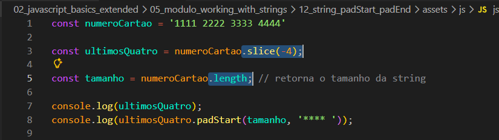
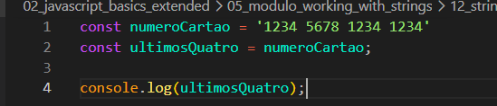

String padStart, padEnd
Intro
Em algum momento iremos nos deparar com momentos onde iremos trabalhar com cartoes de credito, como em sites de compras e etc.
Em algum momento iremos nos deparar com momentos onde iremos trabalhar com cartoes de credito, como em sites de compras e etc.
Como exemplo teremos o seguinte codigo:

Uma das coisas que acontece normamente em sites de compras com cartoes de credito, quando inserimos os numeros de nosso cartao, o que geralemente vemos é uma serie de asteristicos *** seguido pelos ultimos 4 digitos do cartao.
Aqui iremos representar a mesma situacao usando o JS.
Primeiro em nosso codigo temos duas variaveis a primeira ira receber simula o input com dados do cartao de credito e o segundo recebe o valor do primeiro e imprimimos no console o a segunda variavel.
Para podermos mascarar esses valores que desejamos do cartao, o JS tem alguns metodos aqui iremos ver duas delas, sendo elas: padStart e padEnd.
Nele podemos utilizar de dois parametros o primeiro nome da variavel e o segundo caractere que ira fazer separacao (substituir os valores)

Podemos observar que, na variável ultimosQuatro, utilizamos o método .slice(-4), ou seja, ele retorna apenas os 4 últimos caracteres da string.
Em seguida, utilizamos a propriedade .length, que serve para retornar o tamanho da string.
Por fim, no console, utilizamos a variável ultimosQuatro, que já contém apenas os 4 últimos caracteres. Além disso, aplicamos o método .padStart(), onde passamos como primeiro parâmetro o tamanho total da string e, como segundo parâmetro, os caracteres (****) que serão usados para preencher o início.
Agora se quisermos ao inves de retornar ou mascarar os ultimos 4 digitos. Mas por exemplo pegar os primeiros 4 tambem poderiamos fazer.
Com ele conseguimos fazer o basicamente o mesmo que padStart porem comecando do comeco.
